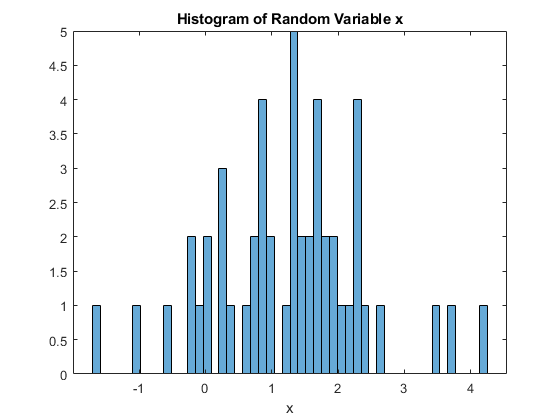
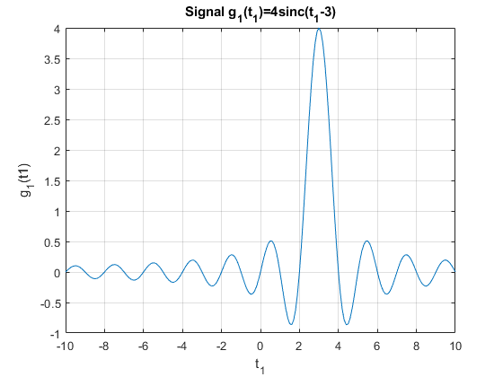
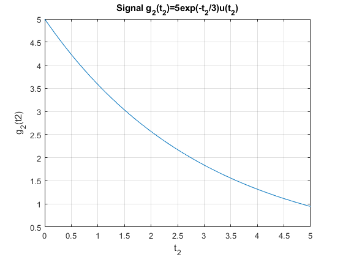
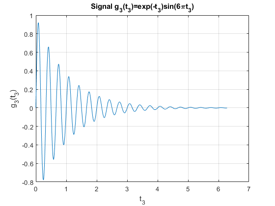
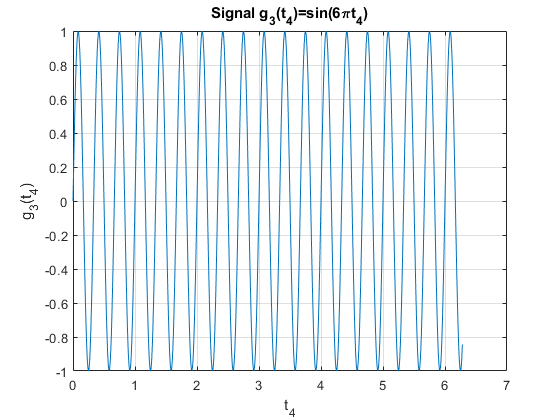

clc
clear
v = 0.8;
m = 1.0;
x = sqrt(v)*randn(1,50)+m*ones(1,50);
xmax = 0;
for k = 1:length(x)
if x(k) > xmax
xmax = x(k);
end
end
fprintf('xmax is: %.4f', xmax)
figure(1)
histogram(x,50)
xlabel('x');
title('Histogram of Random Variable x');
valsArr = [];
count = 0;
for k = 1:length(x)
if x(k) < 0
valsArr = [valsArr, x(k)];
count = count + 1;
end
end
valsArr
fprintf('They are %d random # values less than 0 \n',count)
t1 = -10:0.1:10;
g1 = 4*sinc(t1-3);
figure(2)
plot(t1,g1)
grid on;
xlabel('t_1');
ylabel('g_1(t1)');
title('Signal g_1(t_1)=4sinc(t_1-3)');
t2 = 0:0.01:5;
g2 = 5*exp(-t2/3);
figure(3)
plot(t2,g2)
grid on;
xlabel('t_2');
ylabel('g_2(t2)');
title('Signal g_2(t_2)=5exp(-t_2/3)u(t_2)');
g2_energy = @(t2) abs(5*exp(-t2/3)).^2;
g2_energy = integral(g2_energy,0,Inf)
t3 = 0:0.01:2*pi;
g3 = exp(-t3).*sin(6*pi*t3);
figure(4)
plot(t3,g3)
grid on;
xlabel('t_3');
ylabel('g_3(t_3)');
title('Signal g_3(t_3)=exp(-t_3)sin(6\pit_3)');
g3_energy = @(t3) abs(exp(-t3).*sin(6*pi*t3)).^2;
g3_energy = integral(g3_energy,-Inf,Inf)
t4 = 0:0.01:2*pi;
g3 = sin(6*pi*t4);
figure(5)
plot(t4,g3)
grid on;
xlabel('t_4');
ylabel('g_3(t_4)');
title('Signal g_3(t_4)=sin(6\pit_4)');
g3_energy = @(t4) abs(sin(6*pi*t4)).^2;
g3_power = 1/(1/3)*integral(g3_energy,(-1/3)/2,(1/3)/2)
xmax is: 4.2006
valsArr =
-1.0204 -0.1696 -0.2074 -0.0800 -0.0260 -1.6334 -0.5308
They are 7 random # values less than 0
g2_energy =
37.5000
Warning: Infinite or Not-a-Number value encountered.
g3_energy =
Inf
g3_power =
0.5000
    